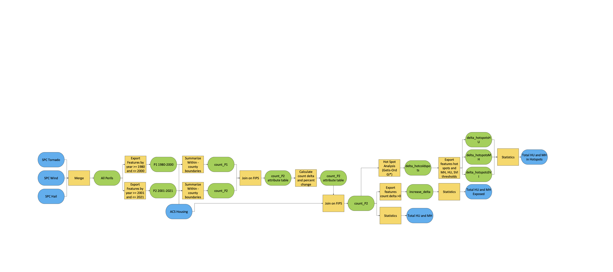
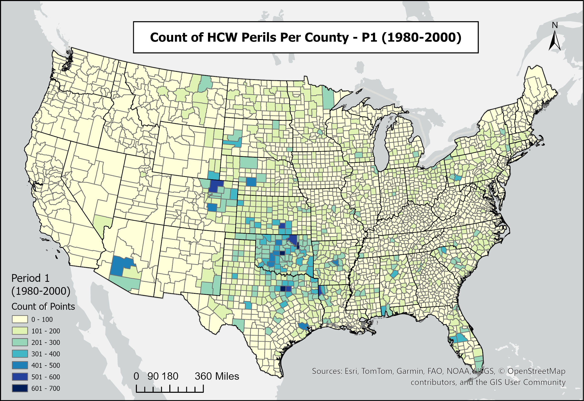
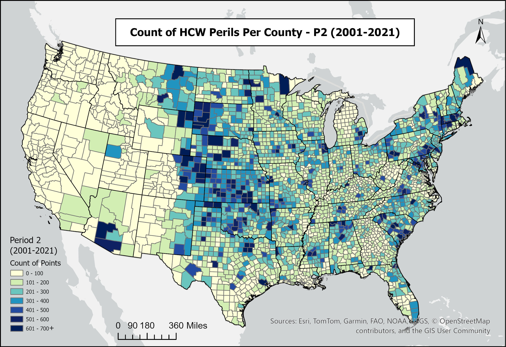
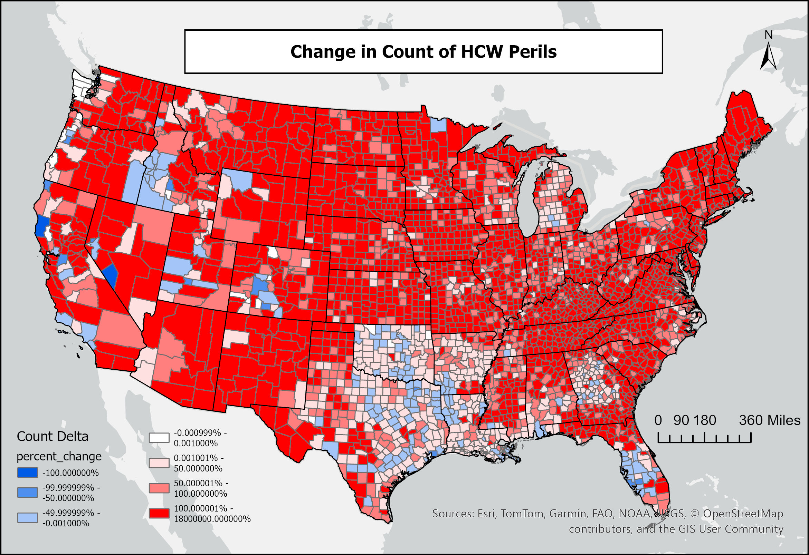
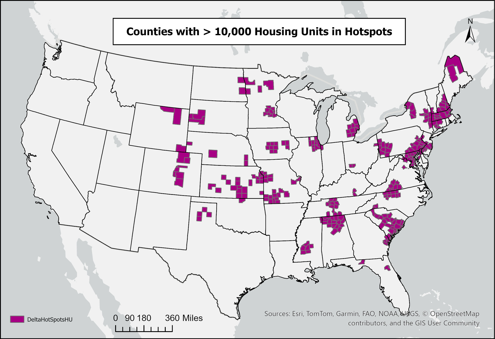
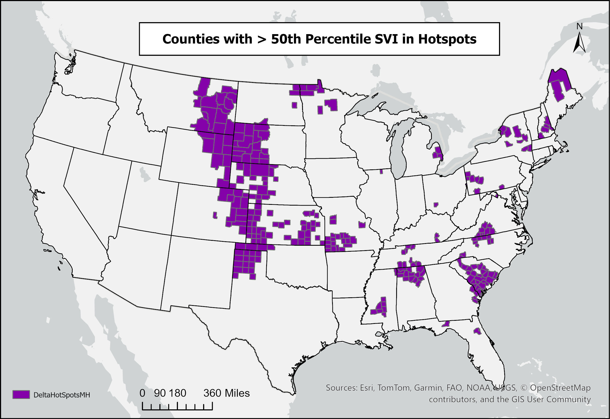
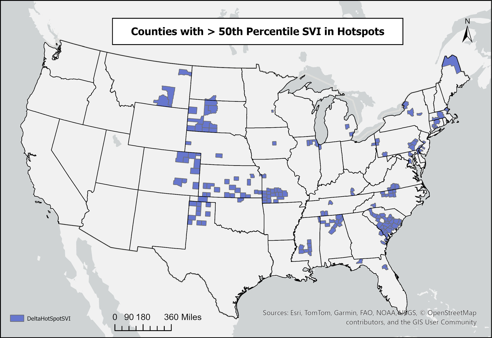
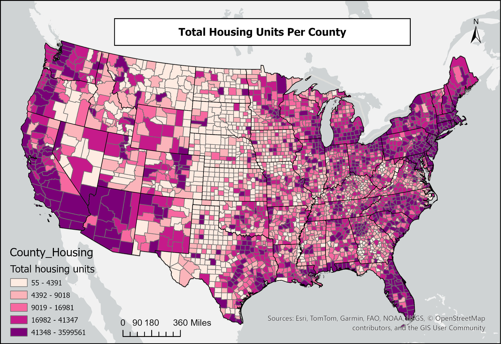
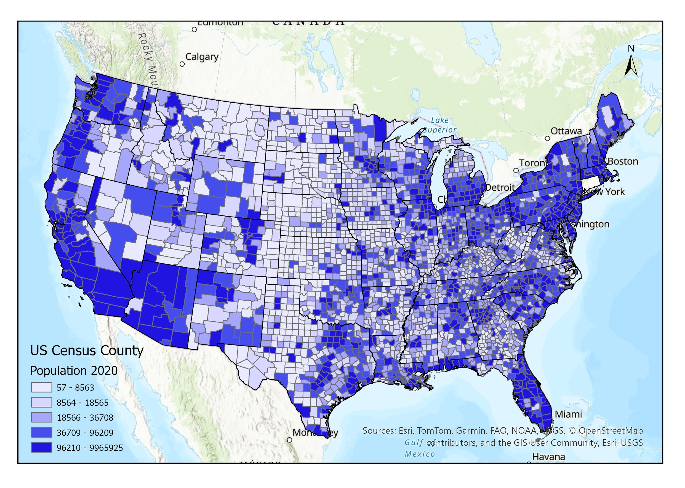
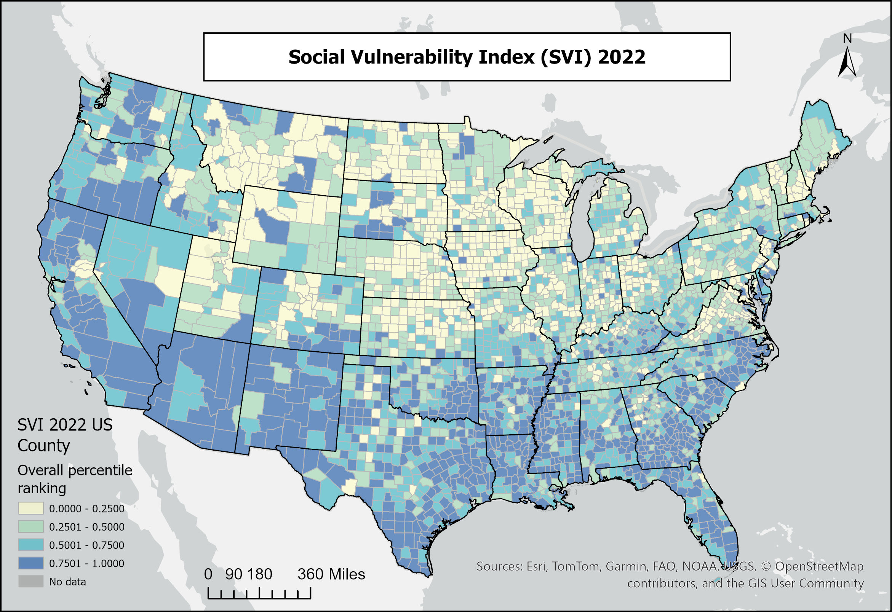

GIS class case study · EAE 557 · December 2024
How has severe weather exposure changed for U.S. homes?
Tornadoes, damaging winds, and large hail affect communities across the United States, but the impact of severe weather depends on more than just the hazard. Where people live, the types of homes they live in, and their access to resources, influences the exposure to severe storms.
For my EAE 557 GIS term project, I investigated how the geographic distribution of reported severe convective weather changed between two multi-decade periods: 1980–2000 and 2001–2021. I then compared those changes with the locations of U.S. housing, manufactured homes, and socially vulnerable populations.
The study
How can we identify changing exposure?
I used NOAA Storm Prediction Center reports of tornadoes, damaging winds, and large hail to build county-level climatologies for two periods: 1980–2000 and 2001–2021. For each county, I calculated the change in reported severe weather counts between the periods. Using ArcGIS Pro, and then identified statistically significant spatial clusters of increasing and decreasing reports, called hotspots and coldspots.
To examine exposure, I combined those results with American Community Survey housing data, including manufactured/mobile homes, and the CDC Social Vulnerability Index (SVI). I incorporated both counties with any increase in reported severe weather and counties belonging to statistically significant hotspot clusters. These are different measures of exposure.

This is an analysis of reported events. Reports can be influenced by population density, observation practices, and changes in reporting over time. The results should not be interpreted as direct attribution of changes to climate change.
The geography of severe weather
Where have the reported hotspots changed?
The spatial distribution of reported hazardous convective weather changed between the two periods. The earlier climatology featured a concentration in the Southern Great Plains, but in the later period, hotspots appeared across more of the Central and Northern Plains, Midwest, South, and East Coast. Some of the areas with increasing reports also contain large populations and substantial housing development. That makes the intersection of weather and the built environment especially important to consider.




Click or tap any map to enlarge it. A hotspot identifies a significant spatial cluster in this dataset; it does not mean every home in that county experienced storm damage.
Where people live
How many homes are in areas with increasing reports?
A large share of U.S. housing was located in counties where reported severe weather counts increased between the study periods. A smaller, but still important, share of housing was in counties identified as statistically significant hotspots.
We also found that 89.01% of manufactured/mobile homes and 90.60% of the U.S. population were in counties with increasing severe weather reports. Approximately 20.96% of the population lived in hotspot counties.
To look more closely at vulnerability, I mapped hotspot counties with more than 10,000 housing units, counties with mobile homes representing at least 6% of housing, and counties with above median Social Vulnerability Index scores.



Explore supporting population and housing maps
These maps show the broader distribution of housing, population, and social vulnerability used in the exposure analysis.



These percentages describe the geographic overlap of housing and population with county level report patterns. They do not mean that the same percentage of homes was directly struck by severe weather, nor do they estimate individual future damage risk.
Why it matters
Why does the type of housing matter?
Not all homes offer the same protection from severe thunderstorms and tornadoes. Manufactured and mobile homes are particularly vulnerable to strong winds, and their residents may have fewer options for accessing a storm shelter.
Social vulnerability matters, too. Income, age, disability, transportation, and access to resources can affect how a household prepares for a storm, receives warnings, reaches shelter, and recovers afterward.
What might these findings mean for communities?
Knowing where changing severe weather report patterns overlap with vulnerable housing can help emergency managers and communities think about shelter access, warning communication, and long-term resilience planning. An important question is whether residents of manufactured home communities have access to nearby, substantial shelter and a practical plan for reaching shelter before dangerous weather arrives.
The results also illustrate why severe weather impacts cannot be explained by atmospheric changes alone. The number and location of homes, how they are constructed, and the resources available to their residents all influence vulnerability.
What could we investigate next?
A useful extension would examine the time of year and time of day when severe weather occurs, alongside changing housing development, local shelter availability, and future population patterns.
More detailed, neighborhood scale information would also help move from county level exposure toward a better understanding of risk.
Keep exploring
Research and resources
Related research and data
- Ashley et al. (2014) — Tornado exposure and the expanding built environment.
- Strader and Ashley (2018) — A fine-scale assessment of mobile-home tornado vulnerability.
- NOAA Storm Prediction Center — Severe-weather GIS report data.
- CDC/ATSDR Social Vulnerability Index — Data and documentation.
Preparedness and community resilience
- National Weather Service: Tornado Safety — How to prepare and find appropriate shelter.
- NWS Manufactured-Home Safety Guide (PDF) — Planning for severe weather when a manufactured home is not a safe shelter.
- FEMA Safe-Room Guidance (PDF) — Residential and community storm-shelter planning and construction guidance.
- My published severe-storm projections — Related research on potential future changes in severe convective storms.
This page presents findings from a December 2024 GIS class project. It is an exploratory, historical exposure assessment, not an operational severe weather forecast or a climate change attribution study.